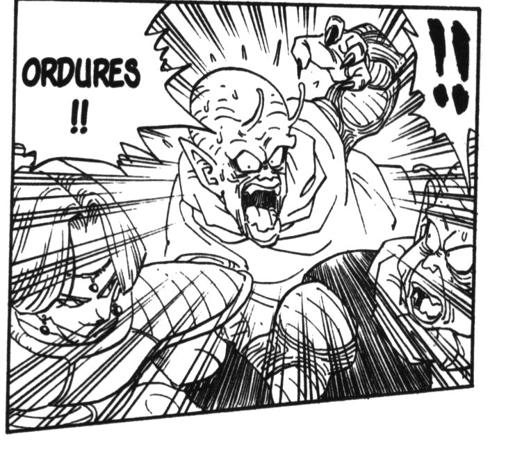

- Aho: crétin.
- Baka: imbécile.
- Bakatare: abruti, crétin.
- Bakayaro / Bakiyaro / Bakamono: connard
- Bakemono: monstre.
- Busu: boudin.
- Buotoko: équivalent masculin de Busu.
- Chibi: demi-portion, minable.
- Doke: dégage !
- Gaki: sale gosse.
- Gomi(me): ordure.
- Kisama: salaud (entendu souvent dans Dragon Ball).
- Kuso / Kuse: merde.
- Kusogaki: petit morveux (entendu dans Hokuto no Ken & Please Save my Earth).
- Kusojiji: vieux con.
- Sukebe: satyre (le titre de certains journaux érotiques dans certains dessins animés).
- Tako: poulpe (par extension, désigne quelqu’un qui est chauve).
- Yaro: campagnard.
Les suffixes de politesse (pour changer un peu…, NDCorrecteur)
- -kun: s’emploie entre amis, signifie “copain”.
- -chan: s’utilise pour les jeunes filles ou pour ce qui est mignon.
- -san: placé après un nom, signifie Mr ou Mme. Ne s’utilise pas lorsqu’on se présente soi-même.
- -sama: formule plus polie que -san. Pourrait se traduire par “Monseigneur”.